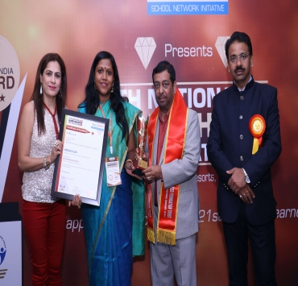
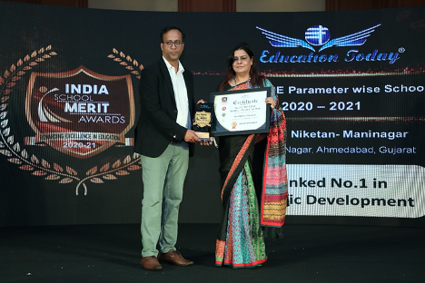

Anand Niketan Maninagar was a proud recipient of Excellence Award in Vedic Education by Center for Excellence in Education (CEE).
It also received National Education Excellence award by Hon'ble Minister of HRD, Prof. (Dr.) Ram Shankar Katheria.
The auditoriums are not just used for theater. They are used for Band, Orchestra, Chorus, and for school assemblies as well. When our current auditoriums were built nearly 60 years ago, they could house the entire student body.So all in all the kids who love performing will be able to display their talents.
Limited interaction with instructor: Online professors usually have a limited role in teaching, as they primarily guide students through the pre-written or pre-recorded course material rather than teach it. The majority of the interaction with professors comes from class discussions and feedback on assignments. Some students who thrive in one-on-one interaction with their professors, may have trouble with this format of schooling. Technology requirements: Not everyone has access to a computer in their homes, or their computer might not be equipped with the latest technologies, which inhibits their online learning experience. Many online schools are still working to build their technical support, so students may be on their own when attempting to troubleshoot problems. Social interaction: One of the benefits of attending courses in a traditional bricks-and-mortar school is the peer-to-peer interaction. Although most online courses do have a discussion area where students are required to talk about specific questions pertaining to that week’s lesson, this is done primarily through writing, making it more difficult to form lasting bonds. Campus environment: Online schools lack valuable campus resources such as extracurricular clubs and activities that can be both enriching and educational. This is particularly important for undergraduate students coming directly from high school, as they may find that they miss these opportunities for personal enhancement. Time management: Individuals who are prone to procrastination will have an especially difficult time adapting to the structure of online school. Hours of self-directed work are necessary to get through all of the material, including course lectures, video supplements, assignments, assigned textbook reading and discussions. Sometimes obtaining your online degree, especially an online masters degree, require a greater amount of work.